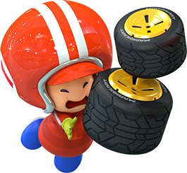

Welcome to the Mario Kart Tour Guide!
Here, you can find information about the game Mario Kart Tour including: Getting Started in Mario Kart Tour Tours, Cups, and Gifts Collecting Characters, Karts, and Gliders Coins, Tokens, and Rubies Getting High Scores Winning Rankings In other words, If you need information on how to play Mario Kart Tour and how to dominate the rankings, you're in the right place.
Getting Started
Getting Started in Mario Kart Tour can take some time. When you first boot up the app, you won't have many options available to you. You can unlock most of these options by completing the first cup. Once you've completed the first cup, you'll have all the rest of the cups available to you, along with many of the options. The gameplay loop resembles something like this: Play races (and battles) to earn points Earn enough points to earn Grand Stars Earn enough Grand Stars to unlock Tour Gifts Tour Gifts give you cool stuff like Coins, Rubies, Characters, Karts, Gliders and Tickets. Unlocking stuff makes it easier to earn points and reach high scores. While Mario Kart Tour may seem a lot different from other games in the series at first, you'll discover over time that the core of the game is still Mario Kart.